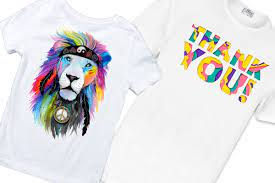
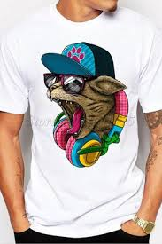

Как сделать рисунок на футболке
Как рисовать на футболке? Декорирование одежды рисунками и надписями – модное направление, поэтому вопросы, что можно нарисовать на футболке и как это сделать, интересуют многих. Конечно, есть возможность заказать нанесение любого принта разными способами у специалистов. Но стать хоть на время настоящим дизайнером, самостоятельно придумать внешний вид изделия и воплотить свои фантазии в жизнь – это так здорово! Правда, для этого нужно знать некоторые секреты дизайнерского дела, с которыми вас и познакомит наша статья
Как и чем рисуют на футболках
Если вас интересует, как нарисовать на футболке рисунок, то начать нужно с выбора того, чем наносить изображение. В домашних условиях создать достаточно стойкую картинку можно с помощью разных материалов:
- Толстые маркеры.Служат они для нанесения изображений на футболки из разных натуральных и искусственных текстильных материалов, светлых и темных расцветок. Пропитывают ткань насквозь.
- Спрей (аэрозоль) для ткани. Используют его для трафаретной техники и свободного рисования, он идеально ложиться на светлые ткани, имеет хорошую покрывную способность.
- Контур. Его применяют для создания точечных рисунков, им можно прорисовывать мелкие детали и выполнять обводку изображений.
- Фломастеры по ткани. Когда рисуем на футболке фломастерами, создаются устойчивые изображения. Можно рисовать на хлопчатобумажных, шелковых и льняных светлоокрашенных тканях.
- Растворимый кофе;
- Луковая шелуха;
- Черника или другие яркие ягоды;
- Березовые листья;
- Чай.
- Измельчите сырье и залейте водой в большой кастрюле;
- Варите до нужной концентрации цвета, затем оставьте настояться и остыть на час;
- Процедите отвар и замочите в полученной жидкости свою белоснежную футболку.
Как покрасить футболку в домашних условиях
Идея заняться самостоятельным окрашиванием одежды приходит в голову в двух случаях: если вы хотите обновить старую, но любимую вещь, либо у вас есть классическая белая футболка, которая кажется слишком скучной. Рассмотрим вторую ситуацию, так как она представляет больше простора для творчества – это настоящий чистый лист для начинающего дизайнера.
Выбираем краситель
Вам понадобится белая хлопковая футболка – купить ее можно в интернет-магазине Cotton-road, там есть модели разного кроя для парней и девушек.
Если вы вообще не в курсе, как покрасить белую футболку в домашних условиях, сначала нужно выбрать краситель.
Доступнее всего натуральные:
Все эти варианты придадут майке стойкий цвет, при этом сохранят ее экологичность.
Процедура подготовки:
Чем можно покрасить еще? Стойкими красками для одежды, которые продаются в отделах бытовой химии! Если вы имеете дело с искусственными красителями, просто следуйте инструкции по применению. Большинство растворяются в конкретном количестве воды.